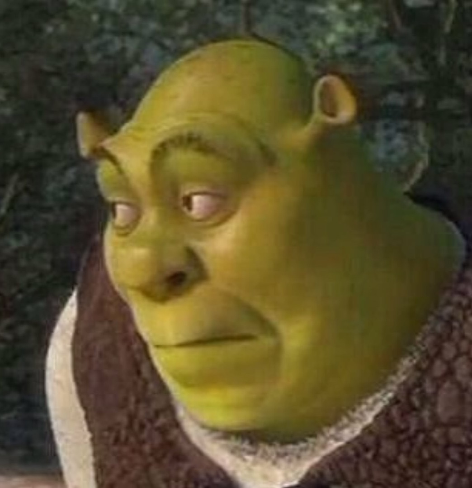
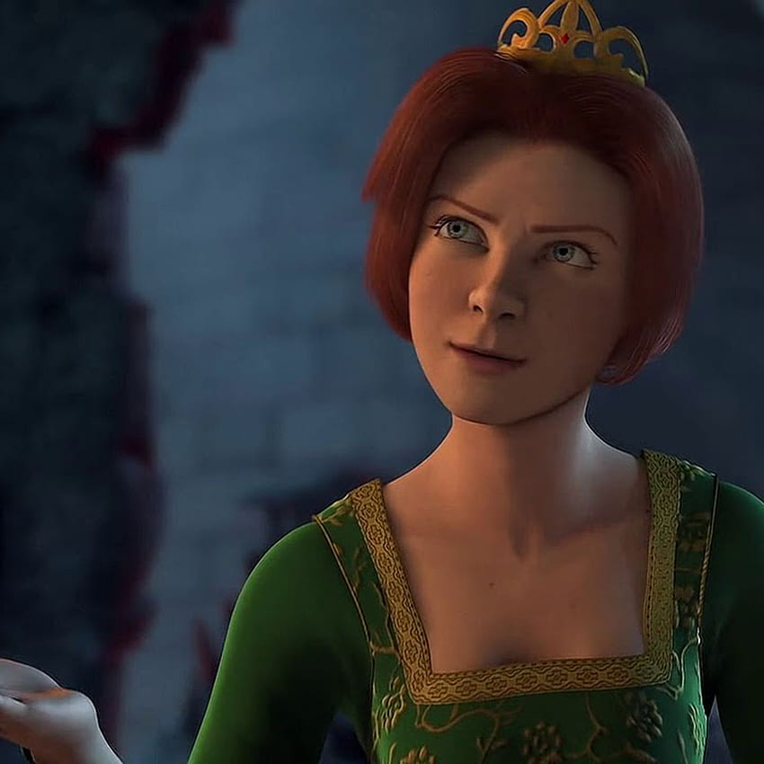
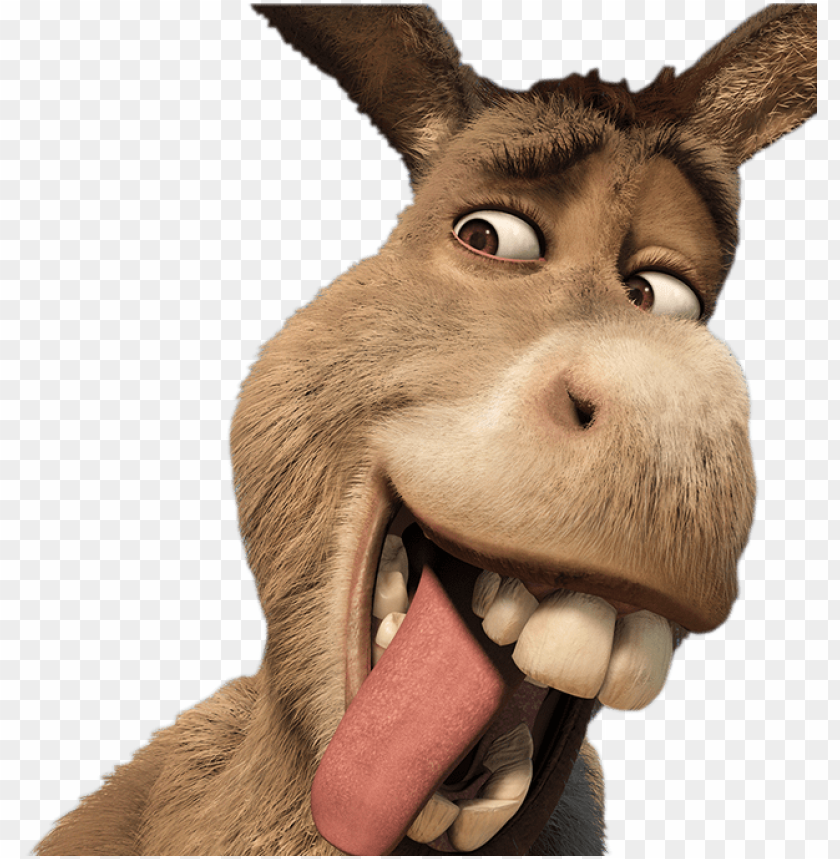

Résumé:
Shrek est un film d'animation américain en images de synthèse réalisé par Andrew Adamson et Vicky Jenson et sorti en 2001. Produit par DreamWorks Animation, ce film pour enfant est une parodie de contes de fées adaptée du livre illustré Shrek ! de William Steig, paru en 1990. Le film suit un ogre laid et misanthrope, Shrek, qui vit tranquille et heureux dans la saleté au milieu d'un marais qu'il croit un havre de paix. Mais un jour, son espace est envahi de créatures de contes de fées expulsées par le tyrannique Lord Farquaad. Shrek, flanqué d'un âne très bavard, part demander des comptes au seigneur. Mais celui-ci le charge d'aller secourir la princesse Fiona prisonnière en haut d'un donjon gardé par un dragon et de la lui ramener pour l'épouser et devenir roi, en échange de l'expulsion des squatteurs de son marais. Or, la princesse Fiona cache un secret terrifiant qui va entraîner Shrek et son compagnon l'âne dans une palpitante et périlleuse aventure.

Shrek tient son nom de la couleur verte traduite en ancienne langue germanique par sheurk. Shrek est un grand ogre à la peau verte, intimidant physiquement, et parlant avec un accent écossais. Même si son passé est un mystère, selon Shrek the Musical, il est révélé que, le jour de son 7e anniversaire, Shrek a été expulsé de son foyer par ses parents comme le voulait la tradition ogre. On le voit par la suite voyager seul, et être harcelé ou réprimandé par les passants. Le seul accueil chaleureux qu’il reçoit est un signe de la main amical de la part de la jeune Fiona, que ses parents emmènent alors rapidement. Dans le livre écrit par William Steig, Shrek !, ses parents le jettent dans un trou noir qui mène au monde réel.

Fiona est née le 05 avril 2001 dans le royaume de Fort Fort Lointain (Far Far Away) en tant qu’enfant unique du roi Harold et de la reine Lillian. Elle est secrètement promise au prince Charmant par son père en guise de remboursement à Marraine la bonne fée, la mère de Charmant, pour l'avoir rendu humain afin de lui permettre d'épouser Lilian dont il est tombé amoureux alors qu'il est à l'origine une grenouille. Suivant les stéréotypes des contes de fées, Fiona est enfermée dans la plus haute tour d'un château protégé par un dragon. Elle grandit nourrie par l'espérance d'un prince qui viendra la sauver : ce prince est donc censé être Charmant, avant que les évènements de Shrek ne bouleversent ce plan. Mais Fiona est également sous le coup d'une malédiction qui la métamorphose entre le lever et le coucher du soleil : humaine le jour, elle devient une ogresse au crépuscule. Cette malédiction doit être rompue par le baiser de son véritable amour : elle deviendra alors "Belle, aux yeux de son amant". Selon Shrek the Musical, Fiona aurait été emprisonnée dans une tour la veille de Noël à l'âge de 7 ans. Elle aurait passé au minimum 20 ans dans cette tour jusqu'à ce que Shrek la sauve
